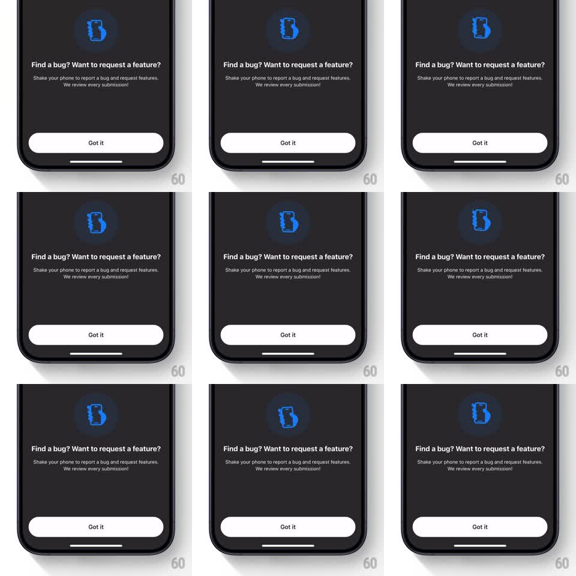

Media
Frame-by-frame

Rebuild this animation 1:1: the shake-to-report teaching sheet - a blue phone icon wiggles left and right on loop inside a dark bottom sheet to demonstrate the shake gesture.

Rebuild this animation 1:1: the shake-to-report teaching sheet - a blue phone icon wiggles left and right on loop inside a dark bottom sheet to demonstrate the shake gesture. ## Integration Integration: stack-agnostic spec - springs given as stiffness/damping, timed motions as duration + curve; map every value to your framework and animation library of choice. ## Scene Dark bottom sheet: a glowing blue phone icon at top, "Find a bug? Want to request a feature?" headline, explainer copy, white "Got it" button. ## Motion spec Pattern: gesture-demo wiggle loop, ~1.2s. - The phone icon rotates +-18deg around its bottom-center pivot (3 rocks per loop, ease-in-out on each reversal), reading clearly as a shake. - A soft blue halo behind the icon pulses in sync (alpha 20% -> 40%). - Brief rest (~400ms) between loops, then the shake repeats. - Text and button are static. ## Calibration - Pivot at the phone's bottom edge, like a hand gripping it; a center pivot reads as spinning. - Three rocks per loop - fewer reads as a sway, more as a buzz. ## Reduced motion Static icon with a subtle motion-lines glyph; no rotation. ## Don't miss - The halo breathes with the shake, not on its own clock. - The loop's rest beat matters - continuous shaking reads as an error state.